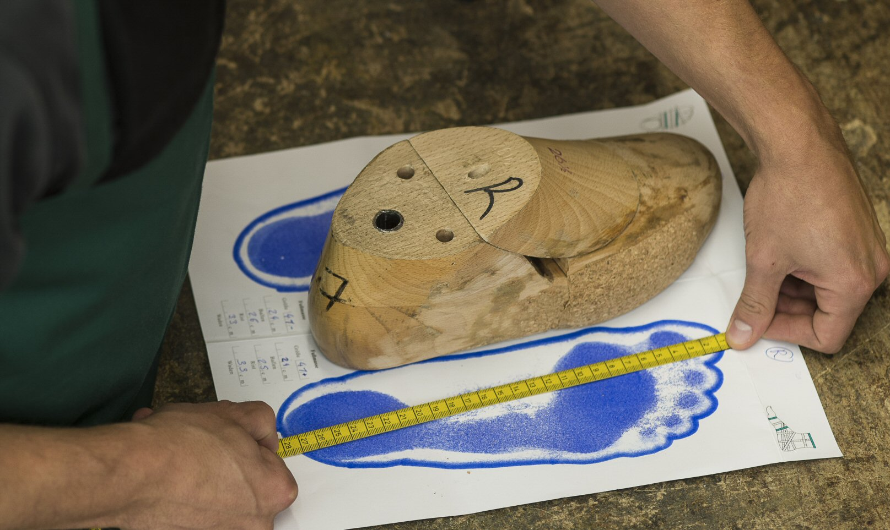

Op maat gemaakt
Een Strolz skischoen is maatwerk en is daarmee de enige skischoen die volledig op maat wordt gemaakt. Zowel de buitenschaal als de binnenschoen.
Voordat onze bootfitter aan de slag kan is het van belang dat uw voeten en onderbenen nauwkeurig worden opgemeten.
Één van onze register-sportpodologen zal met u doorspreken wat uw wensen en eisen zijn. Wat voor type skiër bent u? Heeft u tijdens het skiën pijnklachten? Heeft u ooit blessures gehad? Allemaal aandachtspunten die van belang zijn voor de uiteindelijke keuze van uw nieuwe skischoenen.

Dan volgen enkele functietesten en het nauwkeurig opmeten van de voeten en onderbenen. Dit opmeten beperkt zich niet tot het nemen van maten. We maken ook een podogram (voetscan).
Dit podogram geeft de podoloog veel informatie over uw voetype, hielstand en eventueel te verwachten klachten. Het geldt ook als basis voor het maken van de inlegzool.

Persoonlijke leest
Voor elke op maat gemaakte Strolz skischoen wordt er een houten leest gemaakt naar de maten van uw voet. Dit is de manier waarop ook (orthopedische) schoenmakers dit doen. Elke leest wordt op basis van een scan van uw voet gemaakt. Deze leest wordt gebruikt om de skischoenen op maat te maken.
Strolz skischoenen worden altijd voorzien van een op maat gemaakte inlegzool en als het nodig is met podologische correctie. Als u bijvoorbeeld uw voet ten opzichte van uw onderbeen moeilijker kunt flexen.

Het uiteindelijke doel is om te komen tot een goed passende en zeer comfortabele skischoen die ook nog eens functioneel en esthetisch is.
Plan uw afspraak
U kunt online een afspraak maken. U kunt echter ook telefonisch een afspraak maken via: 020-3033866.